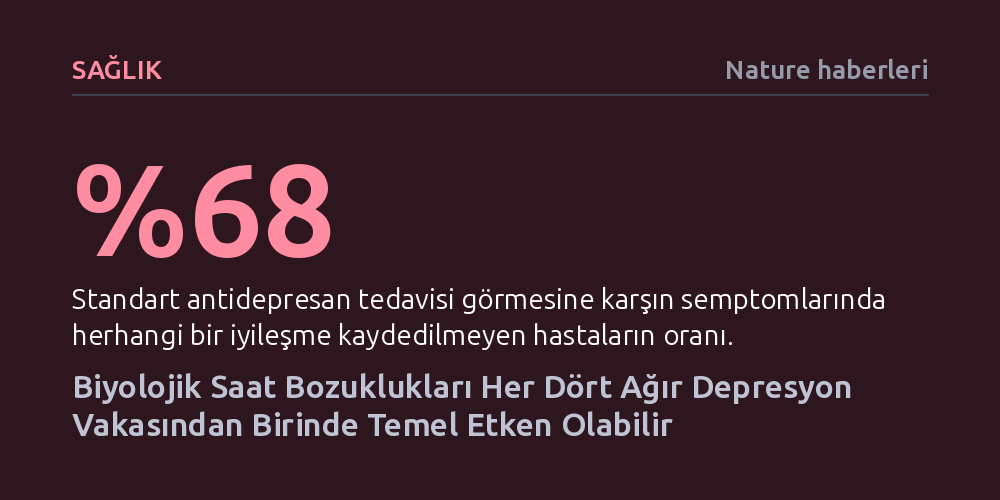

SAGLIK · Nature haberleri · 2026-10-21
Yeni bir araştırma, ağır depresyon hastalarının dörtte birinde biyolojik saatin bozulmasıyla gelişen farklı bir alt tür bulunduğunu gösteriyor. Bu gruptaki vakalar daha erken yaşta başlayıp daha ağır seyrederken standart antidepresan tedavilerine de belirgin biçimde daha az yanıt veriyor.
Depresyonun tek tip bir kimyasal dengesizlik olmadığını, biyolojik saat ve metabolizma aksaklıkları gibi farklı kökenleri tanınmadıkça standart antidepresanların neden hastaların çoğunda işe yaramadığını açıklıyor.

Dünya genelinde en yaygın ruh sağlığı sorunlarından biri olan majör depresyon, klinik uygulamalarda çoğunlukla benzer biyolojik süreçlerin ürünü olan tek bir hastalık tablosu gibi ele alınıyor. Oysa hastaların yaşadığı belirtilerin şiddeti ve mevcut tedavilere verdikleri yanıtlar arasında devasa uçurumlar bulunuyor. British Journal of Psychiatry dergisinde yayımlanan kapsamlı bir genetik ve nüfus çalışması, bu heterojen yapının ardında yatan temel bir biyolojik ayrımı ortaya koydu: Ağır depresyon tanısı alan her dört kişiden birinde hastalığın merkezinde biyolojik iç saatin bozulması yer alıyor olabilir.
Araştırmacıların "sirkadiyen depresyon" olarak adlandırdığı bu alt grup, bilinen klasik depresyon tablolarından belirgin biçimde ayrışıyor. Veriler, bu gruptaki bireylerin hastalık belirtilerini çok daha erken yaşlarda deneyimlemeye başladığını ve klinik tablolarının çok daha ağır seyrettiğini gösteriyor. Çoğunlukla kadınlarda görülen bu durum, yaygın kullanılan standart antidepresan tedavilerine de diğer depresyon türlerine kıyasla çok daha dirençli kalıyor.
İnsan beyni tarafından kontrol edilen ve 24 saatlik döngüyü takip eden biyolojik iç saat; uyku-uyanıklık ritminden hormon salgılanmasına, vücut sıcaklığından sindirime kadar tüm temel işlevleri yönetir. Bu hassas mekanizma sekteye uğradığında kronik jet-lag hissi, odaklanma güçlüğü, kilo alma eğilimi ve uyku bozuklukları baş gösterir. Sidney Üniversitesi'nden araştırmacılar, sirkadiyen depresyonu belirgin bir alt tür olarak tanımlayabilmek amacıyla altı klinik ölçüt geliştirdi.
Bu ölçütler arasında gün içinde aşırı uyku hali, sabahları dinlenemeden yorgun kalkma, geç saatlere kadar uyanık kalmayı tercih etme (gece kuşu tipi), gün ışığı ve mevsim değişimlerinden ruh halinin doğrudan etkilenmesi, gecikmiş uyku evresi ve kişinin biyolojik ritmi ile toplumsal yaşamı arasındaki uyuşmazlık (sosyal jet-lag) yer alıyor. Ağır depresyon yaşayan 11 bin 380 kişinin verilerini analiz eden uzmanlar, bu altı ölçütten en az üçünü karşılayan hastaları sirkadiyen depresyon kategorisinde sınıflandırdı.
Çalışmanın genetik analizleri, sirkadiyen depresyon grubundaki bireylerin dikkat eksikliği ve hiperaktivite bozukluğu (DEHB), anksiyete ve majör depresif bozukluk için daha yüksek genetik risk taşıdığını belgeledi. Araştırmacılardan Emiliana Tonini, bu genetik zemine sahip kişilerin yaz saati uygulaması geçişleri veya bebek sahibi olma gibi uyku-uyanıklık döngüsünü aniden sarsan çevresel ve sosyal değişimlerden çok daha sert biçimde etkilenebildiğini belirtiyor.
Bunun yanı sıra sirkadiyen depresyonun vücuttaki sistemik iltihaplanma (enflamasyon) ve metabolik aksaklıklarla da doğrudan bağlantılı olduğu saptandı. Çalışmanın ortak yazarlarından Jacob Crouse, bu bulguların biyolojik saatteki bozulmanın metabolik süreçleri olumsuz etkilediğini, ortaya çıkan metabolik dengesizliklerin ise kişinin ruh halini, enerji seviyelerini ve uyku derinliğini tahrip eden tehlikeli bir kısır döngü yarattığını gösterdiğini vurguluyor.
Günümüzde depresyon tedavisi gören hastaların önemli bir kısmı, kendilerine uygun ilacı bulana kadar çok sayıda farklı antidepresanı denemek zorunda kalıyor; hatta hastaların yüzde 68'e varan bir bölümü standart antidepresanlardan hiçbir klinik fayda göremiyor. Araştırma ekibi, bir hastadaki depresyonun biyolojik saat kaynaklı olup olmadığının erkenden teşhis edilmesinin, hekimlere ışık terapisi, uyku ritmi müdahaleleri veya doğrudan sirkadiyen mekanizmaları hedefleyen moleküler tedaviler gibi çok daha etkili seçenekler sunabileceğini umuyor.
Buna karşın bağımsız uzmanlar temkinli yaklaşımını koruyor; bulguların henüz öncül nitelikte olduğunu ve resmi tedavi kılavuzlarının değişmesi için daha fazla bağımsız kanıta ihtiyaç duyulduğunu ifade ediyor. Yine de Sydney'deki New South Wales Üniversitesi'nden psikiyatrist Colleen Loo'nun belirttiği gibi bu araştırma, "depresyonu anlama bilimine gerçekten yararlı bir katkı" sunarak hastalığın arkasındaki biyolojik mekanizmaların aydınlatılmasında kritik bir basamağı oluşturuyor.